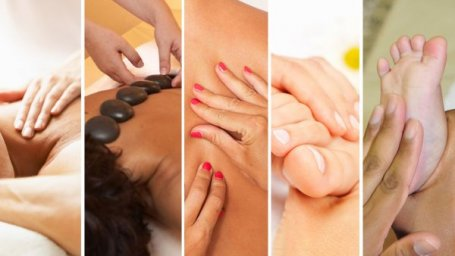

Massoterapia consiste em fazer pressão em diferentes pontos do corpo, sempre no sentido do fluxo sanguíneo de forma a melhorar a circulação e eliminar toxinas. É uma das técnicas curativas mais antigas e é realizada com o auxílio de óleos, cremes e pomadas específicos. Uma das técnicas é a massagem capilar, que desatrofia os vasos sanguíneos na cabeça, relaxando e prevenindo doenças.

Saúde, Equilíbrio e Bem Estar
A termoterapia é feita com a aplicação de pedras vulcânicas quentes, transmitindo calor ao corpo penetrando nos músculos, permitindo a limpeza, a desobstrução e a normalização do fluxo energético, que tem nos meridianos o seu principal meio de condução do ki (energia), obtendo-se então, a homeostase orgânica e energética
A ventosaterapia é um tratamento natural onde são usadas ventosas para criar um efeito de vácuo, aumentando o diâmetro dos vasos sangúneos na região, melhorando a oxigenação e permitindo a liberação de toxinas. Elimina contraturas musculares, fortalece os vasos sanguíneos e relaxa o corpo e a mente.
Na reflexologia o terapeuta pressiona com o polegar ou com instrumentos pontos no pé, a busca de tensões e desequilíbrios de energia que podem se manifestar. Quando encontrados o terapeuta faz uma massagem que estimula os processos curativos naturais no local indicado. Proporciona bem estar e relaxamento pois leva à liberação de toxinas do organismo.
Massoterapia
Usada a mais de 4000 mil anos pelos chineses e afirmada como funcional desde hipócrates, o pai da medicina, em 460 a.c. A massagem é uma das terapias mais antigas do mundo.
As técnicas de massagem dividem-se basicamente em duas grandes categorias: energéticas e fisiológicas. As primeiras buscam a reorientação da energia vital (chi, ki, prana), e as segundas buscam a desintoxicação do organismo através da eliminação do ácido lático das fibras musculares, além de auxiliar o retorno do sistema venoso.
Entre em contato via WhatsApp